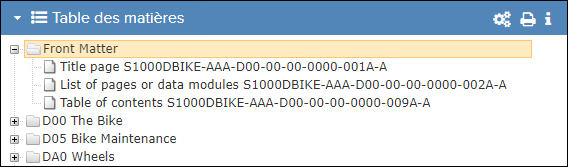
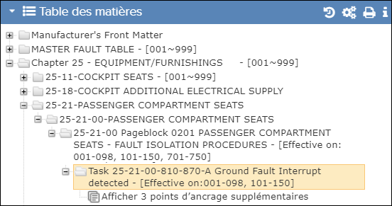
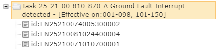

La fenêtre de Table des matières affiche la structure du mode sélectionné dans la fenêtre de Librairie.

Table des matières

Table des matières (Tâche - Sous-tâches disponibles)

Table des matières (Tâche - Sous-tâches développées)
Cliquez sur l'icône Moins pour masquer les ancres de premier niveau.

Table desmMatières (Points saillants de la révision)
| Component | Description |
|---|---|
| Cliquez sur cette icône pour réduire/agrandir le volet Table de matières. | |
| Table de matières la barre | Si un projet est sélectionné, le nom du projet est affiché dans l'en-tête de fenêtre. |
| Montre plus icône | Pour les publications publiées avec les constructeurs iSpec ou KCA
uniquement. Cette icône indique qu'il existe des références d'ancrage supplémentaires, telles que des sous-tâches et des graphiques. Ciquez sur l'icône pour afficher ces références. Vous pouvez cliquer sur une référence pour l'afficher. |
| Icône moins | Pour les publications publiées avec les constructeurs iSpec ou KCA. Lorsque les ancres de premier niveau sont visibles, cliquez sur cette icône pour les masquer. |
Non applicable pour Pinpoint Standalone Light. Cliquez sur cette icône pour afficher la boîte de dialogue Historique des Modifications.Remarque : Vous devez avoir
l'autorisation pour le privilège Peut examiner le journal des
modifications pour que cette boîte de dialogue soit visible.
Vous
pouvez afficher l'état des documents dans cette boîte de dialogue. Reportez-vous à
Historique des Modifications. |
|
Non applicable pour Pinpoint Standalone Light. Si vous êtes un administrateur d'organisation, cliquez sur cette icône pour définir la révision affichée pour la publication sélectionnée. Faire référence à Gestion des publications. |
|
| Cliquez sur cette icône pour imprimer la composition entière ou une section sélectionnée de la composition. Faire référence à Impression en vrac. | |
| Cette icône permet à l'utilisateur de choisir d'afficher ou de masquer le contenu filtré. Reportez-vous à Afficher/masquer le contenu filtré | |
| Cliquez sur cette icône pour afficher des détails supplémentaires sur la publication ou définir une page de destination pour la publication. Faire référence à Métadonnées de Publication. | |
| Cliquez sur cette icône pour révéler des niveaux inférieurs du manuel, tel que les sections, les tâches, sous-tâches, et les sujets. | |
| Cliquez sur cette icône pour afficher le document dans la fenêtre Contenu. Un indicateur de chargement apparaît avant que le document soit affiché. | |
| Icône de sous-tâche | Pour les publications publiées avec les constructeurs iSpec ou KCA
uniquement. Cette icône indique une ancre de premier niveau pour une sous-tâche. Cliquez sur cette icône pour ouvrir la sous-tâche. |
| Pour les publications publiées avec les constructeurs iSpec ou KCA
uniquement. Cette icône indique une ancre de premier niveau pour une figure. Cliquez sur cette icône pour ouvrir la figure. |
|
| Pour les publications publiées avec les constructeurs iSpec ou KCA
uniquement. Cette icône indique un ancrage de premier niveau pour une feuille. Cliquez sur cette icône pour ouvrir la feuille. |